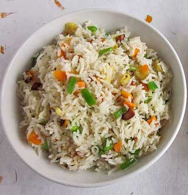

Restaurant Style Fried Rice Ready in 45 minutes Prep: 15 mins | Cook: 30 mins Ingredients 2 cups enriched white rice 4 cups water 2/3 cup chopped baby carrots 1/2 cup frozen green peas 2 tablespoons vegetable oil 2 eggs soy sauce to taste sesame oil to taste (optional) Directions In a saucepan, combine rice and water. Bring to a boil. Reduce heat, cover, and simmer for 20 minutes. In a small sauce pan, boil carrots in water about 3 to 5 minutes. Drop peas into boiling water, drain. Heat wok over high heat. Pour in oil, then stir in carrots and peas; cook about 30 seconds. Crack in eggs, stirring quickly to scramble eggs with vegetables. Stir in cooked rice. Shake in soy sauce, and toss rice to coat. drizzle with sesame oil, toss again. Serves 4  For more Recipes...